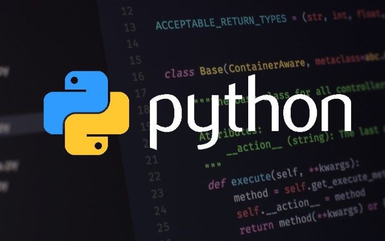

bgcolour="pink"LETS CODE!

acoording to the web these are the top8 programming languages
- PYTHON
- CLANGUAGE
- JAVA
- CSS
- RUBY
- JAVASCRIPT
- C++
- HTML
remember before learning a language know where it is used and for what creation it is used in.
now let us know where these languages are used and for what these are used for
- PYTHON:

Python is commonly employed in web development for creating dynamic websites and server-side applications using frameworks like Django or Flask. It is also a popular choice for data science and machine learning, with libraries such as NumPy, pandas, and TensorFlow facilitating complex data analysis and model development. Additionally, Python is utilized in automation and scripting tasks, enabling users to streamline repetitive processes. Its general-purpose nature extends to desktop GUI applications, game development, and system administration tools. Overall, Python's flexibility and ease of use make it a go-to language for a broad spectrum of applications across various domains.
- CLANGUAGE:
It is commonly employed in system programming, embedded systems, and the development of operating systems. C is also favored for its role in creating high-performance applications, such as game engines and graphics libraries. Its simplicity and close-to-hardware functionality make it suitable for tasks where resource management and direct hardware interaction are crucial. Additionally, C has been instrumental in the development of other programming languages, and its principles are foundational for understanding computer science and programming concepts.
- JAVA:
java is a versatile, object-oriented programming language that is widely used for developing a variety of applications across different domains. Its portability and platform independence make it suitable for creating diverse software, ranging from enterprise-level applications, web development (using frameworks like Spring and JavaServer Faces), mobile applications (Android development), and large-scale distributed systems. Java is also employed in the development of server-side applications, middleware products, and embedded systems. Its robustness, security features, and the ability to run on multiple platforms make Java a preferred choice for developing scalable and reliable software solutions.
- CSS:
CSS, or Cascading Style Sheets, is a crucial web development language used to enhance the presentation and styling of HTML documents. It allows developers to control the layout, appearance, and formatting of web pages, enabling the creation of visually appealing and user-friendly interfaces. CSS is used to define the styling of elements such as text, colors, fonts, spacing, and positioning, providing a consistent and aesthetically pleasing design across different devices and screen sizes. It plays a key role in separating the structure (HTML) from the presentation (CSS) and behavior (JavaScript) of a website, contributing to the overall responsiveness and user experience on the internet.
- RUBY:
Ruby is a versatile programming language primarily used for web development, known for its elegant syntax and developer-friendly features. It gained popularity for building dynamic and interactive websites, as well as web applications. Ruby on Rails, a web application framework written in Ruby, has been instrumental in creating robust and scalable web applications by promoting the principles of convention over configuration and don't repeat yourself (DRY). Beyond web development, Ruby is also employed in automation scripts, command-line utilities, and data processing tools due to its flexibility and ease of use. Overall, Ruby is utilized for crafting a wide range of applications, from simple scripts to complex, feature-rich web platforms.
- JAVASCRIPT:
JavaScript is a versatile programming language primarily used for web development to enhance user interactivity and create dynamic, responsive websites. It is employed to build a wide range of features, including interactive forms, image sliders, real-time updates, and asynchronous communication with servers. JavaScript is an essential component of front-end development, allowing developers to manipulate the Document Object Model (DOM) to update and modify content dynamically. Additionally, it plays a crucial role in the development of server-side applications using frameworks like Node.js. Overall, JavaScript is a key technology for creating dynamic and engaging web experiences, enabling developers to craft interactive and user-friendly interfaces for a variety of applications.
- C++:
C++ is a versatile programming language used for various purposes, ranging from system programming and game development to building high-performance applications and embedded systems. Its strength lies in its ability to provide low-level memory manipulation while supporting high-level abstractions, making it suitable for developing both resource-efficient and complex software. C++ is commonly used in creating operating systems, device drivers, game engines, financial systems, and performance-critical applications where efficiency and control over hardware resources are crucial. Its widespread use across diverse domains highlights its flexibility and power, making it a go-to choice for developers seeking a balance between performance and abstraction in their software projects.
- HTML:
HTML, or HyperText Markup Language, is primarily used for structuring content on the World Wide Web. It serves as the foundational language for creating and designing web pages by defining the structure and layout of information. HTML uses tags to mark different elements such as headings, paragraphs, lists, links, images, and more. It allows web developers to organize and present content in a standardized way, ensuring compatibility across various browsers. HTML forms the backbone of websites and is essential for creating the basic structure that is then enhanced and styled using cascading style sheets (CSS) and made interactive with JavaScript. In essence, HTML is fundamental to building the framework of web pages, facilitating the seamless presentation of information on the internet.
now lets start our coding journey!